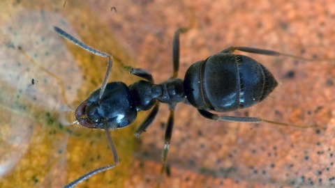

Semut Kebun Hitam (Lasius niger)

Semut kebun hitam (Lasius niger), juga dikenal sebagai semut
hitam biasa, adalah semut formicine, spesies jenis subgenus Lasius, yang ditemukan
di seluruh Eropa dan di beberapa bagian Amerika Utara, Amerika Selatan, Asia dan
Australasia. Spesies Eropa dibagi menjadi dua spesies; L. niger, yang ditemukan di
daerah terbuka; dan L. platythorax, yang ditemukan di habitat hutan. Ini
monogini, yang berarti koloni berisi ratu tunggal.
Siklus Hidup
Pasangan semut di sayap, jadi "semut terbang" adalah alates (individu reproduksi),
yang meliputi jantan dan gynes (ratu perawan). Penerbangan kawin (atau pernikahan)
Lasius niger biasanya terjadi sekitar bulan Juni hingga September di seluruh rentang
spesies; di Amerika Utara penerbangan biasanya terjadi selama musim gugur, sedangkan
di Eropa mereka umumnya berlangsung selama bulan-bulan musim panas Juli dan Agustus.
Penerbangan dapat berisi ribuan pria dan wanita bersayap. [5]
Perbedaan antara kondisi cuaca lokal dapat menyebabkan penerbangan pernikahan berada
di luar fase di antara populasi L. niger yang tersebar luas. Selama musim panas yang
tahan lama dan panas, penerbangan dapat berlangsung secara bersamaan di seluruh
negeri, tetapi cuaca mendung dengan tambalan sinar matahari lokal menghasilkan
kemunculan alates yang jauh lebih tidak sinkron.
Setelah ratu kawin, mereka akan mendarat dan membuang sayap mereka dan mulai
menemukan tempat yang cocok untuk menggali terowongan. Sementara itu, jantan umumnya
hanya hidup selama satu atau dua hari setelah penerbangan kawin dan kemudian akan
mati.
Sarang Baru
Setelah melepaskan sayapnya, seorang ratu akan bergerak cepat untuk menemukan tanah
yang lembab, lalu mulai menggali terowongan. Setelah terowongan selesai, ratu akan
memblokir pintu masuk dan mundur ke bawah. Selanjutnya, dia akan menggali sebuah
ruangan kecil. Ini akan berfungsi sebagai ruang klaustral koloni baru. Umumnya,
seorang ratu akan mulai bertelur segera setelah pembangunan ruangan, dan telur akan
menetas setelah 8-10 minggu. Sampai telur menetas dan larva tumbuh menjadi dewasa,
ratu Lasius niger tidak akan makan, mengandalkan protein otot sayapnya untuk dipecah
dan dicerna. Dalam beberapa kasus, ratu Lasius niger dapat memakan telurnya sendiri
untuk bertahan hidup.
Telur menjadi semut
Lasius niger, seperti semut lainnya, memiliki empat tahap perkembangan: telur, larva,
pupa, dan dewasa. Lasius niger meletakkan telur kecil, putih, berbentuk ginjal
dengan permukaan lengket halus yang membantu mereka untuk dibawa dalam kelompok,
bukan satu per satu. Setelah menetas Lasius niger melanjutkan ke tahap larva
menyerupai belatung kecil. Larva perlu diberi makan oleh ratu (atau pekerja dalam
kasus koloni yang mapan) jika mereka ingin dewasa; Saat mereka memberi makan larva
tumbuh, menumpahkan kulit mereka, melakukannya biasanya tiga kali secara total.
Dengan setiap ganti kulit, larva tumbuh rambut bengkok yang memungkinkan mereka
untuk dibawa dalam kelompok. Ketika larva Lasius niger mencapai ganti kulit
terakhir, mereka umumnya terlalu besar untuk dibawa sebagai bagian dari kelompok dan
dibawa secara individual. Setelah larva tumbuh cukup besar, ia memutar kepompong di
sekelilingnya. Untuk membantu proses ini, seorang ratu (atau pekerja) dapat mengubur
larva sehingga dapat memutar kepompongnya tanpa terganggu, dan memulai proses
metamorfosis. Setelah proses selesai, pekerja Lasius niger muncul dari kepompong.
Pada tahap ini, pekerja berkubang benar-benar putih tetapi akan menjadi gelap selama
satu jam sampai berubah menjadi hitam.
TKoloni didirikan
Semut pekerja pertama yang muncul sangat kecil dibandingkan dengan generasi
selanjutnya. Pada titik ini para pekerja segera mulai memperluas sarang dan merawat
ratu dan induk; Mereka akhirnya melepaskan segel dari pintu masuk ke sarang dan
mulai mencari makan di atas tanah. Ini adalah waktu yang kritis bagi koloni karena
mereka perlu mengumpulkan makanan dengan cepat untuk mendukung pertumbuhan di masa
depan dan terutama untuk memberi makan ratu yang kelaparan, yang akan kehilangan
sekitar 50% dari berat tubuhnya. Dari titik ini output bertelur ratu akan meningkat
secara signifikan, menjadi satu-satunya fungsi ratu. Generasi semut pekerja
selanjutnya akan lebih besar, lebih kuat dan lebih agresif karena ada lebih banyak
nutrisi bagi mereka pada tahap larva. Induk awal yang diberi makan hanya oleh sumber
daya langka yang tersedia untuk ratu akan jauh lebih kecil daripada induk yang
didukung oleh tim pekerja mencari makan dan menyusui. Asalkan pekerja dapat
menemukan makanan, pada tahap ini koloni akan melihat peningkatan populasi secara
eksponensial. Setelah beberapa tahun, setelah koloni mapan, ratu akan bertelur yang
akan menjadi ratu dan jantan. Semut hitam sering membuat sarang besar dengan koneksi
terowongan yang luas.
Perilaku karantina
Ketika membangun koloni mereka, semut menyusunnya sehingga menghambat penularan
penularan yang berbeda. Komunitas yang berbeda di dalam koloni dipisahkan oleh
sejumlah simpul ikat, memungkinkan perlindungan yang lebih besar terhadap anggota
sarang yang rentan, seperti larva dan kepompong, dan ratu. Selain itu, semut yang
terinfeksi individu telah diamati menghabiskan lebih banyak waktu mencari makan di
luar sarang, menjelajah lebih jauh daripada semut lain, dan membatasi interaksi
mereka sekali di dalam sarang lagi.